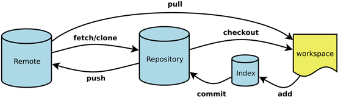

前言：git 用的好，删库不用跑，记一下踩过的坑
# vim 命令
# vim 插入模式命令
| 命令 | 说明 |
|---|---|
| i | 实现的是在光标之前的插入 |
| I | 大写的 i 实现在光标所在行的最前面插入 |
| a | 实现在光标后插入 |
| A | 实现在光标所在行的行尾插入 |
| o | 实现在光标所在行的上方插入新行 |
| O | 是现在光标坐在行的下方插入新行 |
# git 中 vim 的命令
| 命令 | 说明 |
|---|---|
| :w | 保存编辑后的文件内容，但不退出 vim 编辑器。这个命令的作用是把内存缓冲区中的数据写到启动 vim 时指定的文件中。 |
| :w! | 强制写文件，即强制覆盖原有文件。如果原有文件的访问权限不允许写入文件，例如，原有的文件为只读文件，则可使用这个命令强制写入。但是，这种命令用法仅当用户是文件的属主时才适用，而超级用户则不受此限制。 |
| :wq | 保存文件内容后退出 vim 编辑器。这个命令的作用是把内存缓冲区中的数据写到启动 vim 时指定的文件中，然后退出 vim 编辑器。另外一种替代的方法是用 ZZ 命令。 |
| :wq! | 强制保存文件内容后退出 vim 编辑器。这个命令的作用是把内存缓冲区中的数据强制写到启动 vim 时指定的文件中，然后退出 vim 编辑器。 |
| ZZ | 使用 ZZ 命令时，如果文件已经做过编辑处理，则把内存缓冲区中的数据写到启动 vim 时指定的文件中，然后退出 vim 编辑器。否则只是退出 vim 而已。注意， ZZ 命令前面无需加冒号 : ，也无需按 Enter 键。 |
| :q | 在未做任何编辑处理而准备退出 vim 时，可以使用此命令。如果已做过编辑处理，则 vim 不允许用户使用 :q 命令退出，同时还会输出下列警告信息：No write since last change (:quit! overrides)。 |
| :q! | 强制退出 vim 编辑器，放弃编辑处理的结果。如果确实不需要保存修改后的文件内容，可输入 :q! 命令，强行退出 vim 编辑器。 |
| :w filename | 把编辑处理后的结果写到指定的文件中保存。 |
| :w! filename | 把编辑处理后的结果强制保存到指定的文件中，如果文件已经存在，则覆盖现有的文件。 |
| :wq! filename | 把编辑处理后的结果强制保存到指定的文件中，如果文件已经存在，则覆盖现有文件，并退出 vim 编辑器。 |
# git 流程图


# git 添加文件
git add -u
添加已跟踪的被修改（modified）和被删除（deleted）文件，不包括新文件（new）（即：表示只添加暂存区已有的文件（包括删除操作），但不添加未跟踪的新增文件）。
git add .
添加未跟踪的新文件（new）和已跟踪的被修改（modified）文件，不包括被删除（deleted）文件（注意：只能够提交当前目录或者它后代目录下相应文件）。
git add -A
（ git add --all 的缩写） 添加所有变化；是上面两个功能的合集，可以提交未跟踪、修改和删除文件。
# git 远程强制推送
git push -f origin master强制更新到 GitHub，
--force假如遇到冲突也让 git 强制执行
# git 删除当前分支下的所有历史版本与 log 并同步至 GitHub
切换到 latest_branch 分支下：
git checkout --orphan latest_branch添加所有文件：
git add –A提交更改：
git commit -m '清除所有历史版本以减少仓库大小'删除分支：
git branch -D master将当前分支重命名：
git branch -m master最后，强制更新存储库：
git push -f origin master
# git 出现 "fatal: refusing to merge unrelated histories"
背景：在本地初始化了一个 git 代码仓库，关联到 Github 上新建的仓库，第一次执行 git pull origin master 拉取远程分支时，出现标题上的问题（ Git 2.9 之后的版本才会出现此问题）。
需要添加 --allow-unrelated-histories 告诉 git 允许不相关历史合并，即写成 git pull origin master --allow-unrelated-histories 。
# git 撤销 commit
# 方法一
找到你想要撤销的 commit id：
git log撤销到当前 commit id 的位置：
--soft：不删除工作空间改动代码，撤销 commit，不撤销git add。git reset --soft commit id
或者
--mixed：不删除工作空间改动代码，撤销 commit，并且撤销git add操作，这个为默认参数；git reset --mixed HEAD^和git reset HEAD^效果是一样的。git reset -- mixed commit id
亦或者
--hard：删除工作空间改动代码，撤销 commit，撤销git add（即时光穿梭 - 版本回退）。git reset --hard commit id
# 方法二
如果你刚执行完 commit 后，想撤回 commit，可以直接：
git reset --soft HEAD^
这样就成功的撤销了你的 commit；注意，仅仅是撤回 commit 操作。
HEAD^ 的意思是上一个版本，也可以写成 HEAD~1 ；如果你进行了 2 次 commit，想都撤回，可以使用 HEAD~2 ，以此类推。
# 方法三
如果 commit 注释写错了，想改一下注释。
git commit --amend
此时会进入默认 vim 编辑器，修改注释完毕后保存就好了，当然你也可以直接：
git commit --amend –m '新命名'
# git 重写历史
1、修改多个提交信息，可以通过给 git rebase 增加 -i 选项来交互式地运行变基。 必须指定想要重写多久远的历史，这可以通过告诉命令将要变基到的提交来做到。
例如，如果想要修改最近三次提交信息，或者那组提交中的任意一个提交信息， 将想要修改的最近一次提交的父提交作为参数传递给 git rebase -i 命令，例如你想修改倒数第三次的历史，即 HEAD~2^ 或 HEAD~3 （两者是一样的），亦或者通过 commit id 来操作。 记住 ~3 可能比较容易，因为你正尝试修改最后三次提交，但是注意实际上指定了以前的四次提交；那么我们只需要修改提交的父提交：
git rebase -i HEAD~3
再次记住这是一个变基命令 —— 在 HEAD~3 … HEAD 范围内的每一个修改了提交信息的提交及其 所有后裔 都会被重写。 不要涉及任何已经推送到中央服务器的提交 —— 这样做会产生一次变更的两个版本，因而使他人困惑。
2、在文本编辑器上找到想要修改的历史信息，修改 pick 为 edit；需要重点注意的是相对于正常使用的 log 命令，这些提交显示的顺序是相反的。
3、当保存并退出编辑器时，git 将你带回到列表中的最后一次提交，然后输入 git commit –amend ，接着修改提交信息，然后退出编辑器；最后，运行 git rebase --continue ，这个命令将会自动地应用另外两个提交，然后就完成了。
# git rebase 后出现 (master|REBASE –i n/m)
只需要： git rebase --abort ，放弃当前操作退出 rebase-merge 目录。
# git 合并多次 commit，然后在保存时出现 "error: cannot'squash' without a previous commit"
注意不要合并先前提交过的东西，也就是已经提交远程分支的纪录。
# git rebase 报错：error: cannot rebase: You have unstaged changes. error: Please commit or stash them.
有两种方法：
- 一种是使用 commit 把未暂存的文件进行一次提交，但我们并不想增加一个脏的提交，虽然说可以进行 commit 合并，可这不是自找麻烦吗，那么你可以考虑第二种；
- 第二种就是使用
git stash（git 储藏），git stash会把所有未提交的修改（包括暂存的和非暂存的）都保存起来，用于后续恢复当前工作目录；使用该命令后会推送一个新的储藏，当前的工作目录就干净了，这样就可以接着使用git rebase了；需要说明一点，stash是本地的，不会通过git push命令上传到git server上；然后想重新应用缓存的stash，可以通过git stash pop命令恢复之前缓存的工作目录。
# git stash
# 常用操作
git stash save 'save message'执行存储时，添加备注，方便查找，使用
git stash可以，但查找时不方便识别。git stash list查看
stash了哪些存储。git stash show显示做了哪些改动，默认 show 第一个存储，如果要显示其他存贮，后面加
stash@{$num}，例如显示第二个：git stash show stash@{1}。git stash apply应用某个存储，但不会把存储从存储列表中删除；默认使用第一个存储，即
stash@{0}；如果要应用其它，则后面加stash@{$num}， 例如应用第二个：git stash apply stash@{1}。git stash pop用于恢复之前缓存的工作目录文件，将暂存起来的文件对应修改应用到当前的工作目录下，同时将缓存堆栈中的对应 stash 删除；默认为第一个存储，即
stash@{0}；如果要应用并删除其他 stash，则后面加stash@{$num}，例如应用并删除第二个：git stash pop stash@{1}。git stash drop stash@{$num}丢弃
stash@{$num}存储，从列表中删除这个存储 。git stash clear删除所有缓存的 stash。
# 暂存部分文件
git add file1 file2 # 保留不想备份的文件至工作区 | |
git stash save -k # 暂存未 add 的更改文件 | |
git reset # 恢复工作区文件，至此，只有未 add 的更改文件被储藏 |
# git 基于当前工作区新开一个本地分支，并把远程仓库的文件强制覆盖本地某一分支的文件
有时候我们在 master 分支上 commit 了多次，但是后面觉得这些东西应该另外开一个分支 dev 存储比较好，并且想保留之前已经 push 上远程仓库的代码，那么需要以下操作：
先把当前的所有文件放到暂存区里面：
git add –A新建一个分支 dev，并切换到该分支：
git checkout -b dev把所有未提交的修改（包括暂存的和非暂存的）都保存起来：
git stash切换回去 master 分支：
git checkout master从远程分支拉取代码，但是不同步合并本地分支：
git fetch –all设置本地的 master 与远程 master 的 commit 一致：
git reset --hard origin/master回到我们工作的 dev 分支：
git checkout dev恢复之前缓存的工作目录：
git stash pop
# git 删除远程分支后，仍能在本地中看到该分支
使用
git push origin --delete <name>删除远程分之后（<name>为要删除的分支名）。执行
git branch -a查看远程和本地所有分之，发现还会显示已删除分支。执行
git remote show origin查看远程库，可看到远程分支，本地分支相对应的关系。执行
git remote prune origin删除远程没有本地有的分支。
# git 指定版本
此时只需要三步走：
1、克隆代码： git clone xxxx.git
2、进入项目目录： cd <项目文件夹名称>
3、切换到指定版本： git checkout <commit SHA>
注： <commit SHA> 可通过 git log 查看。
在 git submodule 中也可以指定子模块的版本，方法就是：
首先添加子模块，然后 cd 到子模块，checkout 到指定的版本，然后提交就可以了，跟上面的操作一样。
# 使用 .gitignore 忽略 target、.idea 文件夹等
#忽略所有.svn目录 | |
.svn/ | |
#忽略所有target目录 | |
target/ | |
#忽略所有.idea目录 | |
.idea/ | |
#忽略所有.iml文件 | |
*.iml |
| 语法 | 含义 |
|---|---|
| / | 目录 |
| * | 多个字符 |
| ? | 单个字符 |
| [] | 多个可选字符匹配单个字符 |
| ! | 不忽略（跟踪）匹配到的文件或目录 |
note： .gitignore 只能忽略那些 ** 原来没有被 track（之前没有 add 过）** 的文件，如果某些文件已经被纳入了版本管理中，则修改 .gitignore 是无效的。
要想解决，就是先把本地缓存删除（改变成未 track 状态），然后再提交（假设 target 文件已被添加）：
git rm -r --cached target
此时将不再追踪 target 这个文件了。
# git 代理设置
# 前提条件
- 首先你得一个可用的梯子（代理）
- 其次，确认你的梯子的代理端口号
# 设置 Github 上的 https 协议代理
Git 代理有两种设置方式，分别是全局代理和只对 Github 代理，建议只对 Github 代理。
代理协议也有两种，分别是使用 http 代理和使用 socks5 代理，建议使用 socks5 代理。
#使用 socks5 代理（推荐） | |
git config --global https.https://github.com.proxy socks5://127.0.0.1:[proxy_port] | |
# 使用 http 代理（不推荐） | |
git config --global https.https://github.com.proxy http://127.0.0.1:[proxy_port] | |
# note：其中 [proxy_port] 为你使用的代理端口号 | |
# 查看配置 | |
git config --global --get https.https://github.com.proxy | |
# or | |
git config --global -e |
如果要取消 https 代理，注释掉配置或者输入以下命令：
git config --global --unset https.https://github.com.proxy |
# 设置 Github 上的 ssh 协议代理
https 代理存在一个局限，那就是没有办法做身份验证，每次拉取私库或者推送代码时，都需要输入 Github 的账号和密码，非常痛苦。
在设置 ssh 代理前，请确保你已经设置 ssh key 。
# 编辑或创建 `~/.ssh/config` 文件 | |
vim ~/.ssh/config | |
# 添加如下配置信息 | |
# github | |
Host github.com | |
HostName github.com | |
PreferredAuthentications publickey | |
# [github_rsa] 为你的 | |
IdentityFile ~/.ssh/[github_rsa] | |
# 主要是下面这一行，其中 [proxy_port] 为你使用的代理端口号 | |
ProxyCommand connect -S 127.0.0.1:[proxy_port] %h %p | |
# 测试配置 | |
ssh -T git@github.com |
如果要取消 ssh 代理，注释掉配置或者删除文件即可。
# 附
Learn Git Branching
常用 Git 命令清单
Git 教程